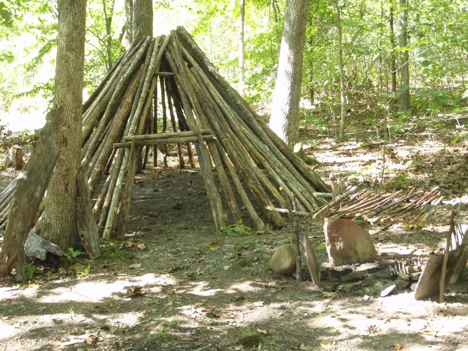

Round Lodge
The round lodge is a hybrid from many cultures. Part tipi, part wicki-up, and influenced by many architectural styles, a round lodge can block wind, rain, cold, and sun. It is structured like a tipi, with the addition of a solid doorway. These typically have a smoke hole through the roof, and can accommodate a tiny fire for heat and light. This shelter can be thatched with grass or mats; or it can be buried with a thick coat of leaf litter. Lodge styles like this abounded in the historic and prehistoric American west.